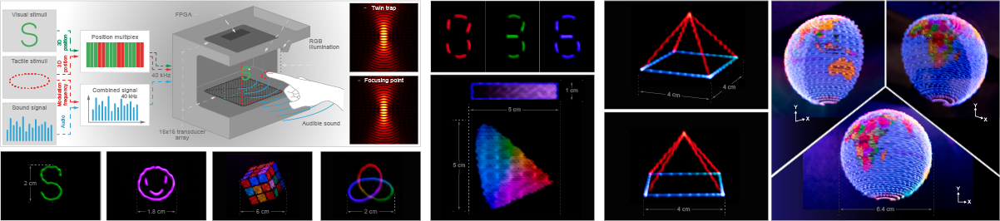

Ryuji Hirayama, Diego Martinez Plasencia, Nobuyuki Masuda, and Sriram Subramanian, Nature 575, 320–323 (2019) [Paper link].
Science-fiction movies portray volumetric systems that provide not only visual but also tactile and audible three-dimensional (3D) content. Displays based on swept-volume surfaces, holography, optophoretics, plasmonics or lenticular lenslets can create 3D visual content without the need for glasses or additional instrumentation. However, they are slow, have limited persistence-of-vision capabilities and, most importantly, rely on operating principles that cannot produce tactile and auditive content as well. Here we present the multimodal acoustic trap display (MATD): a levitating volumetric display that can simultaneously deliver visual, auditory and tactile content, using acoustophoresis as the single operating principle. Our system traps a particle acoustically and illuminates it with red, green and blue light to control its colour as it quickly scans the display volume. Using time multiplexing with a secondary trap, amplitude modulation and phase minimization, the MATD delivers simultaneous auditive and tactile content. The system demonstrates particle speeds of up to 8.75 metres per second and 3.75 metres per second in the vertical and horizontal directions, respectively, offering particle manipulation capabilities superior to those of other optical or acoustic approaches demonstrated until now. In addition, our technique offers opportunities for non-contact, high-speed manipulation of matter, with applications in computational fabrication and biomedicine.
| 2019.11 | ITV News (British TV show), “How holograms could be the future of medicine, advertising and entertainment”. |
| 2019.11 | BBC Radio (British radio channel), “Science in Action”. |
| 2019.11 | Nature News feature, “Star Wars-style 3D images created from single speck of foam,” Nature 575, 272–273 (2019). |
| 2019.11 | Nature Asia, Research highlights, “Physics: A sound design for 3D displays”. |
| 2019.11 | Nature Japan, 注目のハイライト, “【物理学】視覚・聴覚・触覚コンテンツを同時に生成できる3次元ディスプレイ”. |
| 2019.11 | The Guardian (British Newspaper), “Hologram-like device animates objects using ultrasound waves”. |
| 2019.11 | Discover Magazine (American science magazine), “With a Floating Bead, This Device Makes Truly 3D Holographs”. |
| 2019.11 | Scientific American (American science magazine), “Hearing Is Seeing: Sound Waves Create a 3-D Display”. |
| 2019.11 | Science Magazine (News site of AAAS), “See the new Star Wars–like display that could ‘revolutionize’ virtual reality”. |
| 2019.11 | NBC News (American news site), “With a single bead of plastic, scientists tease interactive 3D”. |
| 2019.11 | NewScientist (British science magazine), “We can now make animated ‘sound holograms’ that you can touch”. |
| 2019.11 | 日本経済新聞 (Japanese Newspaper), “立体映像とともに音・触感を再現 英大学が技術”. |
| 2019.11 | Dagens Nyheter (Swedish Newspaper), “Ny teknik skapar 3D-bilder som låter och känns”. |
| 2019.11 | NRC Handelsblad (Dutch Newspaper), “3D-beeld gevangen in geluidsgolven”. |
| 2019.11 | Neue Zürcher Zeitung (Swiss Newspaper), “Fast ein richtiges Holodeck”. |
| 2019.11 | Frankfurter Allgemeine FAZ.NET (German science news site), “Ein 3D-Display aus der Zukunft”. |
| 2019.11 | Physics World (International science news site), “Ultrasound device creates an audio, visual and tactile 3D display”. |
| 2019.11 | ITmedia News (Japanese news site), “3D画像、触覚、音を空中に同時生成 超音波ディスプレイ、東京理科大など開発”. |
| 2019.11 | The Telegraph (British news site), “Scientists close to creating Star Wars Princess Leia hologram”. |
| 2019.11 | CNET (YouTube channel of American news media), “You can feel and hear these holograms”. |
| 2019.11 | SciShow (YouTube channel), “A Potential New Staph Vaccine and Touchable 'Holograms'”. |
| 2019.11 | Cité des sciences et de l'industrie (French museum website), “Du virtuel au bout des doigts!”. |